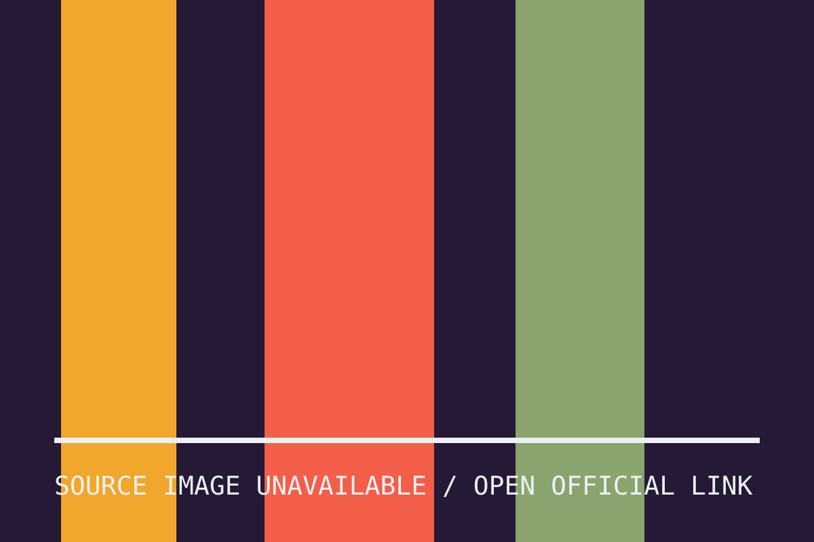

这些数据不能自动证明它适合每个人，但它们至少改变了设计问题的起点：不是先做出一双“标准鞋”，再把尺寸缩小，而是先承认身体差异，再决定鞋面、脚趾空间和中底怎样配合。对象的诚意，往往藏在它先承认了什么。
major / 02 / 04 · PREVIEW EDITION · NOT PRODUCTION
一双鞋先承认脚并不只有一种标准
FIT STARTS WITH DIFFERENCE — A shoe begins by admitting that the standard foot is a fiction.


官方图片未载入，当前显示本地编辑图。
ASICS 的官方资料说明，BLOOMSTRIDE 的开发参考了 Move Her Mind 项目与超过两百万次脚型扫描，并采用女性优先的楦型、为脚趾留出空间，同时用新的 FF LUXE 缓震材料连接跑步与日常移动。产品计划于 9 月 1 日全球上市。
VERIFIED SOURCES / DATES
来源保持原样，阅读体验只改变观看方式。
- ASICS Introduces BLOOMSTRIDE ↗ASICS · 2026-08-26 · 2026-09-01
- ASICS BLOOMSTRIDE specs ↗Running Shoe DB · 2026-08-30 · 2026-09-01